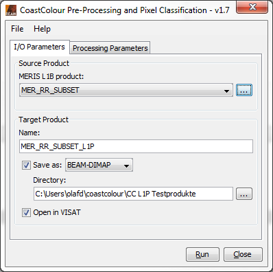
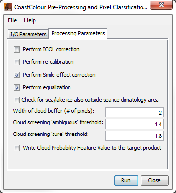
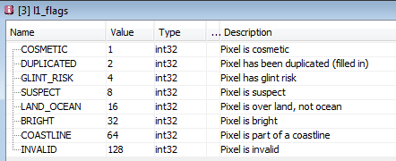
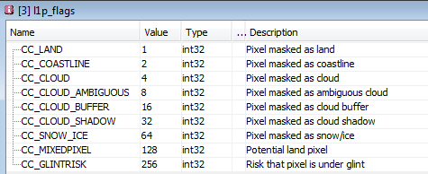
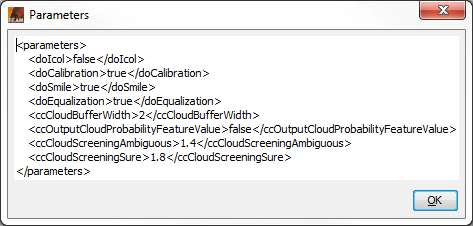
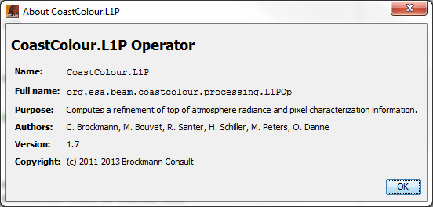

| Pre-Processing and Pixel Classification |
|
Selecting the CoastColour Processors (MERIS)... entry from the VISAT 'Processing --> Thematic Water Processing' sub-menu opens another sub-menu with the three entries 'Pre-Processing and Pixel Classification...', 'Atmospheric Correction...', and 'In-Water Processing...'. Selecting 'Pre-Processing and Pixel Classification...' from this sub-menu pops up the 'Pre-Processing and Pixel Classification' dialog:

MERIS L1B product: Here the user specifies the MERIS L1b source product. The combo box presents a list of all products open in VISAT. The user may select one of these or, by clicking on the button next to the combo box, choose a product from the file system.
Name: Used to specify the name of the target product.
Save to: Used to specify whether the target product should be saved to the file system. The combo box presents a list of file formats, currently BEAM-DIMAP, GeoTIFF, and HDF5.
Open in VISAT: Used to specify whether the target product should be opened in VISAT. When the the target product is not saved, it is opened in VISAT automatically.
Selecting the Processing Parameters tab in the 'Pre-Processing and Pixel Classification' dialog switches to the following view:

Perform ICOL correction: This checkbox indicates if the ICOL adjacency effect correction shall in addition be applied on the input radiances. NOTE: This additional step becomes very time- and memory-consuming with increasing product size! We would recommend not to run the ICOL step within CoastColour processing for products larger than about 1000x1000 pixel. In that case, the ICOL standalone processor should instead be used with an L1P product as input. For this puropse, please install ICOL through the BEAM Module Manager (see [L1P-1]). However, this still might be slow. In any case, we would recommend, if possible, to generate product subsets with the BEAM product sub-setting tool (see [L1P-2]) before running ICOL.
Perform re-calibration: This checkbox indicates if the correction from MERIS 2nd to 3rd reprocessing quality shall be applied.
Perform Smile-effect correction: This checkbox indicates if the MERIS Smile-effect correction shall be applied.
Perform equalization: This checkbox indicates if the detector-to-detector systematic radiometric differences in MERIS L1b data products shall be removed.
Width of cloud buffer (# of pixels): This value is the width of a cloud 'safety buffer' around a pixel which was classified as cloudy.
Write Cloud Probability Feature Value to the CC L1P target product: This checkbox indicates if the Cloud Probability Feature Value shall be written to the target product. This value is a floating point number in the interval [1.0, 2.0] describing the increasing probability of a pixel being cloudy (1.0 = certainly clear, 2.0 = certainly cloudy).
Width of cloud buffer (# of pixels): This value is the width of a cloud 'safety buffer' around a pixel which was classified as cloudy.
Cloud screening 'ambiguous' threshold: This value is the threshold of Cloud Probability Feature Value above which a cloud is regarded as still ambiguous.
Cloud screening 'sure' threshold: This value is the threshold of Cloud Probability Feature Value above which a cloud is regarded as sure.
The 'l1_flags' band in the MERIS L1B source product has the standard coding as shown below:

The CC L1P target product provides an additional flag band 'l1p_flags' with a coding as shown below:

Selecting the File entry in the Menu Bar opens the following view:

Open Parameters...: When this entry is selected, an 'Open File' dialog will appear. Here, a BEAM GPF parameters XML file can be selected, containing 'Pre-Processing and Pixel Classification' parameters which were saved earlier. These parameters will be loaded and applied for an upcoming processing.
Save Parameters...: When this entry is selected, a 'Save File' dialog will appear. Here, the current set of 'Pre-Processing and Pixel Classification' parameters can be saved into a BEAM GPF parameters XML file for later re-usage.
Display Parameters...: When this entry is selected, the current set of 'Pre-Processing and Pixel Classification' parameters will be displayed in XML format (see below).

Selecting the Help entry in the Menu Bar opens the following view:

Help: When this entry is selected, this online help is opened in a separate window.
About...: When this entry is selected, an 'About' dialog for the current processor is opened (see below).


Run: When this button is clicked, the processing will be started with the selected parameters.
Close: When this button is clicked, the processor tool window will be closed.

[L1P-1]
BEAM Module Manager Help Documentation:
www.brockmann-consult.de/beam/doc/help/visat/ModuleManager.html
[L1P-2]
BEAM Product Subsetting Help Documentation:
www.brockmann-consult.de/beam/doc/help/visat/ProductSubsetDialog.html